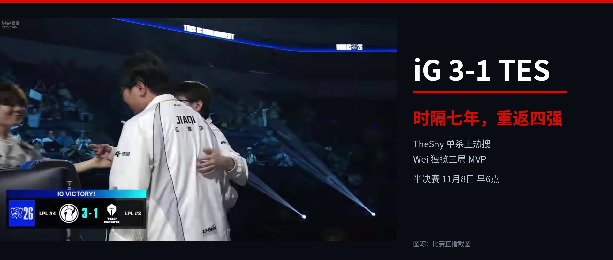
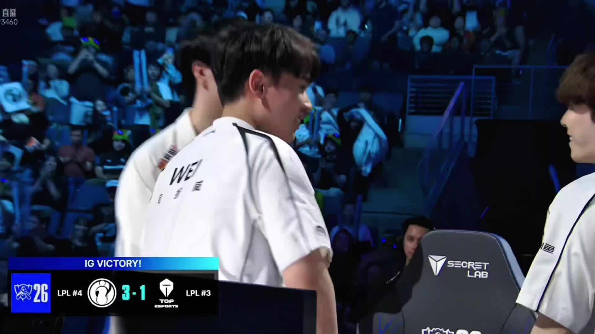
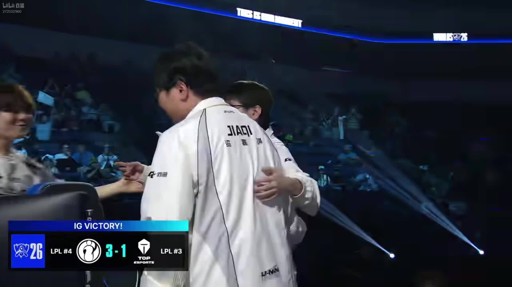
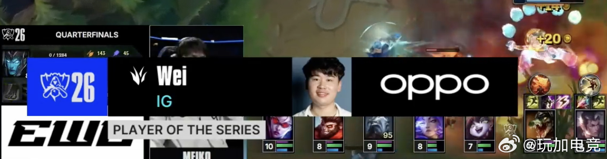
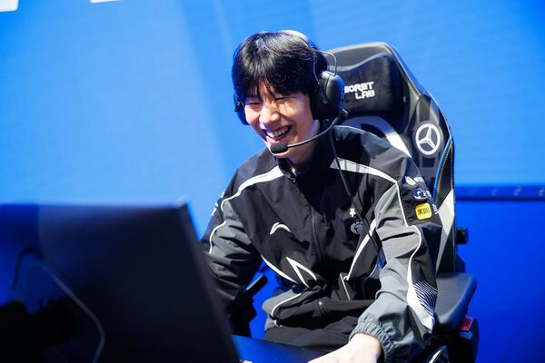

▲ 图源：比赛直播截图
水晶炸掉的那一下，TheShy 没往自己队伍那边走。
他先拐去了 TES 的选手席。369 在那坐着——临时归队打了整个世界赛的人，刚刚被淘汰的人。TheShy 走过去，抱了一下。
然后才是 iG 3-1 TES，S16 第一支四强队伍，时隔七年。
这场比赛有两个故事，一个在台上，一个在那十米里。
01
台上的故事：四局棋，三种赢法
第一局，TheShy 的纳尔 2 分钟上路单杀安蓓萨拿一血——热搜就是这一刀砍出来的。15 分钟 JiaQi 卡莎三杀打出 2换5，24 分钟 Rookie 辛德拉再拿三杀，30 分钟推平基地。
第二局，369 的还击。48 分钟鏖战，TheShy 掏薇恩但团战哑火，369 的鳄鱼在塔下一夫当关，末期 1打3 还杀了两口，TES 硬生生扳平。输是输了，9哥这场没缩过。
第三局，Wei 的杰斯 3 分钟游中帮 Rookie 的安妮拿一血，中期对位经济一度压到 4000。第三局打完，比赛服务器宕机，全世界等了一个多小时。

▲ 第四局终结瞬间：基地爆炸与选手镜头。图源：比赛直播截图
第四局回来，Wei 前期住在了上路，帮 TheShy 建立优势，中期连拿火龙魂和大龙，一波收尾。3-1。
02
热搜记住了单杀，比赛记住了 Wei

▲ 终结时刻的 Wei。图源：比赛直播截图
四局合砍 17 / 10 / 36。第一、三、四局的 MVP 全是他，英文流把系列赛 POM 投给他，韩文流的 POG 也是他。
三张选票，三种语言，投的都是同一个人。
TheShy 的单杀负责上热搜，Wei 的节奏负责赢比赛。这个分工 iG 粉丝应该很熟悉——2018 年那支冠军队伍，也是这么赢的。

▲ 英文流系列赛最佳：Wei。图源：玩加电竞
03
那十米：从赛季初的休息，到顶峰相见

▲ iG 上单 TheShy。图源：Liquipedia 选手资料图
赛后 TheShy 采访解释了那把薇恩：「369 选手是比较团队型的上单，英雄池偏向坦克，所以我选了把 VN。」同一段采访里他也认了错：「发条来上路那波我失误了，导致队伍落后。」
敢掏薇恩，也敢认错。这就是这十米的另一头。
赛事官方给拥抱那张照片配了一句话：「从赛季初的休息，到顶峰相见。」TheShy 休整两个赛段后回归；369 因为队友签证被卡，休息数月后临时救火。两个人都是中途回来的人，却在八强撞在一起，必须有一个先走。
竞技体育最残酷的规则和最体面的瞬间，隔了十米，都在今晚。
04
对账时间
赛前那篇我押的是「TES 3-2 iG」。比分错了，方向也错了，字面意义上的全错。
但这是我今年输得最开心的一次。因为更早我说过：希望 iG 赢，押注 TES 赢。希望赢了押注，这是做 LPL 粉丝最好的那种输法。
接下来还有两场八强：明天 GEN vs LYON，后天 DK vs BLG。LPL 的四强名额已经到手一个，BLG 能不能把上限顶到两支，就看 Bin 的了。
七年，够一支冠军队隐退，
也够一支队伍重新走回来。
评论区聊聊：
这个拥抱你记住的是谁？半决赛 GEN 或者 LYON，iG 能过谁？
11月8日早上6点，继续定闹钟。
点个关注，S16 打到哪我跟到哪。
资料来源：英雄联盟赛事官方逐局战报与赛后配文、人民电竞、五星体育、虎扑、直播吧、玩加电竞。数据截至北京时间11月4日。